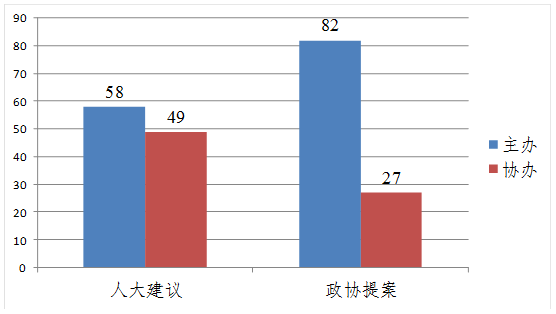
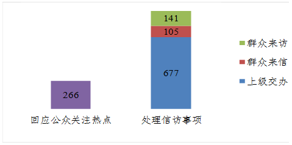

四川省教育厅科学技术处-四川省教育服务公共平台网站
四川省教育厅科学技术处-四川省教育服务公共平台网站
四川省教育厅科学技术处-四川省教育服务公共平台网站
四川省教育厅科学技术处-四川省教育服务公共平台网站
四川省教育厅科学技术处-四川省教育服务公共平台网站2018年政府信息公开工作年度报告
四川省教育厅科学技术处-四川省教育服务公共平台网站
2019年3月20日
本年报根据《中华人民共和国政府信息公开条例》（国务院令第492号）要求，由四川省教育厅科学技术处-四川省教育服务公共平台网站编制。报告内容包括：信息公开概况、政府信息主动公开情况、政府信息依申请公开和处理情况、建议提案办理结果公开情况、政府信息公开咨询处理情况、因政府信息公开申请行政复议和提起行政诉讼的情况、政府信息公开支出和收费情况、存在的主要问题和改进措施。本年报所列数据的统计期限自2018年1月1日起至12月31日止，年报电子版可以从四川省教育厅科学技术处-四川省教育服务公共平台网站政府信息公开平台（scest.net）上下载。如对报告有任何疑问，请联系四川省教育厅科学技术处-四川省教育服务公共平台网站政策法规与综合改革处（行政审批处）（联系电话：028-86117428 传真：028-86110612邮编：610041 地址：成都市青羊区陕西街26号）。
一、政府信息公开概况
2018年，我厅深入贯彻落实《中华人民共和国政府信息公开条例》、国务院办公厅《关于印发2018年政务公开工作要点的通知》（国办发〔2018〕23号）、中共四川省委办公厅四川省人民政府办公厅印发《关于全面推进政务公开工作的实施意见》（川委办〔2016〕53号）、四川省人民政府办公厅《关于印发四川省2018年政务公开工作要点的通知》（川办发〔2018〕41号）的要求，坚持以公开为常态、不公开为例外，大力推进决策、执行、管理、服务和结果公开。针对公众关切，主动、及时、全面、准确地公开政府信息。不断扩大公开范围，细化公开内容，拓展公开渠道。深入推进本级政府信息公开，加强信息发布、解读和回应，依法依规答复群众提出的信息公开申请，进一步深化对省属高等学校信息公开工作的指导和监督，不断提高教育领域透明度，着力发挥信息公开对依法行政、依法治教、依法治校的促进作用，取得了一定的成效。
截止2018年12月31日，我厅在“四川教育网”和四川省电子政府信息外网门户网站等其他公开载体全年公开各类信息15136条，其中：政府网站公开政府信息数8621条，政务微博公开政府信息5052条，政务微信公开政府信息1463条。
图1 各类信息公开分布图
二、政府信息主动公开情况
（一）加大工作统筹力度。积极指导列为国务院基层政务公开标准化、规范化试点的8个县（市）做好“义务教育”方面的政务公开工作，并配合省政府信息公开办完成验收工作。指导省管高校做好信息公开工作，各校均及时在网上发布2018年度信息公开工作报告。制发2018年信息公开工作计划，完善省教育厅信息公开目录并在网上公开发布，及时发布信息公开年度工作报告，提升教育厅政务公开制度化、标准化、信息化水平。
（二）推进教育领域重大决策信息公开。充分发挥四川省教育厅科学技术处-四川省教育服务公共平台网站咨询专家团和律师顾问团的作用，坚持教育重大决策专家咨询制度，提高决策科学化；涉及群众切身利益或社会高度关注的重大政策措施，通过调查研究、咨询座谈等方式，广泛听取市（州）教育行政部门、学校、专家学者等各方意见，提高了决策过程的透明度。今年在广泛征求公众意见的基础上，制发了《关于深化教育体制机制改革的实施意见》、《对市（州）人民政府履行教育职责的评价办法》、《关于全面深化新时代教师队伍建设改革的实施意见》《关于建立财政支持化解义务教育大班额激励奖补机制的实施意见》《关于实施中等职业教育质量提升工程的通知》《关于鼓励社会力量兴办教育促进民办教育健康发展的实施意见》《四川省民办学校分类登记实施办法》《四川省营利性民办学校监督管理实施办法》《四川省规范校外培训机构发展的实施方案》等文件。
（三）促进行政权力透明运行。在教育厅门户网站主页公开了行政职权目录，包括大项、子项目录，列入目录的行政权力按要求全部在行权平台上运行。细化了服务指南、审查细则和审批服务规范，列明政策依据、申请条件、办理程序、办理时限、受理机构等内容，接受监察部门的监察。开设“办事服务”平台，设置了网上办事大厅、办事指南、表格下载、热点查询、热点服务等子平台，推动各直属单位建立和完善信息公开制度，向社会公开单位职能、岗位职责、服务标准、监督方式等内容。围绕高考、研究生考试、大学生就业创业、中小学安全教育等热点问题，图文并茂地进行针对性呈现，丰富服务形式，提高服务水平。
（四）推进财政资金信息公开。按照省财政厅制定的《省级部门预决算公开工作规程》（试行）规定的内容、格式，在2018年预算和2017年度决算批复后20个工作日内，将“2018年预算”和“2017年度决算情况”予以公示公告，公开信息中包含所属预算单位的预决算信息。基本支出和项目支出全部公开到项级科目，一般公共预算财政拨款基本支出公开到款级科目。公开“三公”经费决算，包括因公出国（境）团组数及人数，公务用车购置数及保有量，国内公务接待的批次、人数，以及“三公”经费增减变化原因等信息。在教育厅网站及时公开政府采购项目信息，实现了采购预算、流程及结果的全过程信息公开。
（五）继续推进高考招生信息公开。全面实施高校招生“阳光工程”，推动高校重点做好录取程序、咨询及申诉渠道、重大事件违规处理结果、录取新生复查结果等信息公开工作，我厅在省教育考试院官方网站上设立了“阳光公示”专栏，及时公开高校自主招生办法、考核程序和录取结果，全面实行考试加分考生资格公示工作。严格执行教育部和我省的各项招生政策和纪律，深入实施高校招生阳光工程，落实招生信息“十公开”要求，多渠道全面、准确公布招生政策办法、招生计划和录取相关信息，主动公示有关资格考生540246人次。普通高校招生录取期间征集各批次志愿共计51次，接听考生咨询来电9万多次，接待考生、家长3000余人次，组织编发简报10余期，招生录取工作实现了“零投诉”。
2018年，我省普通高校招生中公示的考生包括：1.高校自主招生资格考生1982人、自主招生录取考生999人（含高校综合评价考生）；2.高水平艺术团资格考生190人、高水平艺术团录取考生56人；3.高水平运动队资格考生361人、高水平运动队录取考生18人；4.享受加分照顾政策资格考生91349人（其中享受民族地区照顾政策考生91203人，其他加分照顾政策考生146人）；5.保送生资格考生162人、保送生录取考生152人。我省成人高校招生中公示的各类照顾加分考生信息72790人次，享受民族地区照顾政策考生29713人。2018年我省高校招生录取工作，按规定应予公开公示的信息，全部都予以了公开公示。
表一 2018年普通高校及成人高考招生公示情况统计表
|
项目 |
普通高校招生 |
成人高考招生 |
|||||||
|
高校自主招生 |
高水平艺术团考生 |
高水平运动队考生 |
保送考生 |
享受加分政策考生 |
享受加分政策考生 |
||||
|
其中：享受民族地区照顾政策考生 |
其中：享受民族地区照顾政策考生 |
||||||||
|
数量 |
资格 |
1982 |
190 |
361 |
162 |
91349 |
91203 |
72790 |
29713 |
|
录取 |
999 |
56 |
18 |
152 |
|||||
（六）扩大公众参与和政民互动。逐步完善公众参与机制，探索适应于不同层级、不同领域公众参与的事项和方式，通过加强政民互动，问政于民、问需于民、问计于民。利用互联网、“两微一端”等构建公众参与新模式，畅通公众表达意愿渠道。先后开通“意见征集”“问答精选”“在线访谈”“问卷调查”“结果反馈”等栏目，开展《四川省教师资格制度实施细则（征求意见稿）》《关于清理规范中小学竞赛活动的通知（征求意见稿）》等意见征集活动，在“大学习大讨论大调研”活动中通过四川教育报刊社微信公众平台“川教之声”，开展题为“四川教育：你最关心的和你最想说的”网络调研活动；在线回答网民提问40条，开展问卷调查6次，开展在线访谈5次。
三、依申请公开办理情况
全年有8件依申请公开事项，其中：网络申请6件，信函申请2件。受理8件，办结8件，在法定期限内办结数为100%，其中：同意公开答复3件，同意部分公开答复2件，不同意公开答复2件，告知作出更改补充1件。
表二 依申请公开办理情况统计表
|
项目 |
申请情况 |
办理情况 |
||||
|
网络申请 |
信函申请 |
同意公开答复 |
同意部分公开答复 |
不同意公开答复 |
告知作出更改补充 |
|
|
数量 |
6 |
2 |
3 |
2 |
2 |
1 |
四、建议提案办理结果公开情况
贯彻落实《国务院办公厅关于做好全国人大代表建议和全国政协委员提案办理结果公开工作的通知》（国办发〔2014〕46号），对建议提案办理结果公开工作明确了公开方式、涉密处理、属性标注等工作程序。牵头办理人大建议107件（主办58件，协办49件）、政协提案109件（主办82件，协办27件），已全部办结。办理工作严格按照《四川省人民政府办理人大代表建议和政协提案办法》要求，从强化组织领导、强化沟通协调、强化借鉴吸收等方面下功夫，努力加强和改进办理工作，实现办复率、满意率两个100%，并在门户网站建议提案公开专栏分批次公开了建议提案答复结果。

图2 人大政协建议提案办理数量图
五、咨询及信访处理情况
通过“厅长信箱”、“在线访谈”、举办新闻发布会、信访接待、微博微信、处室咨询答复等多种方式，积极回复回应公众关注热点266条。2018年，共处理信访事项923件次，接待来访群众237人次。其中，处理群众来访141批次、群众来信105件、上级交办件677件。此外，督促各市（州）教育行政部门和有关高校办理教育部办公厅交办的网民留言4037条。

图3 咨询及信访处理数量图
六、政府信息公开收费及减免情况
2018年本机关未收取任何与政府信息公开相关的费用。
七、因政府信息公开申请提起行政复议、行政诉讼的情况
2018年，本机关无涉及因政府信息公开提起的行政复议和提起的行政诉讼案件。
八、存在的主要问题及2019年工作打算
政府信息公开工作中存在的问题和不足主要有：信息公开制度还需要进一步细化、完善，高校信息公开工作有待继续推进，公开平台渠道有待进一步优化，平台互动性还需加强。
2019年，我们将认真贯彻《中华人民共和国政府信息公开条例》，落实省委省政府关于政府信息公开工作的要求，进一步增强主动公开意识，加强对省属高校信息公开的指导和监督，创新公开形式，优化公开载体，扩大公开范围，努力推进教育厅政府信息公开工作取得新成效。